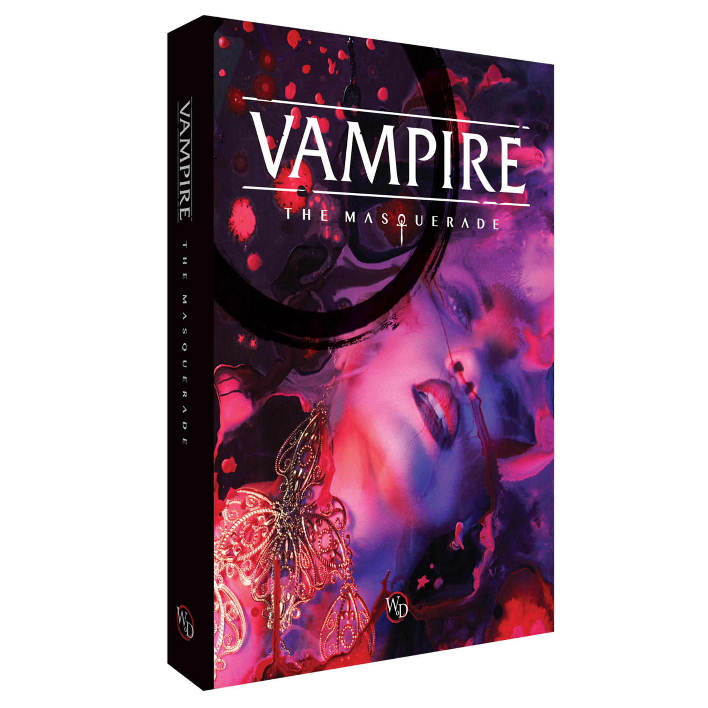
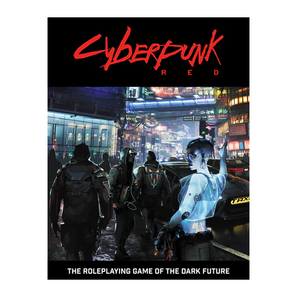
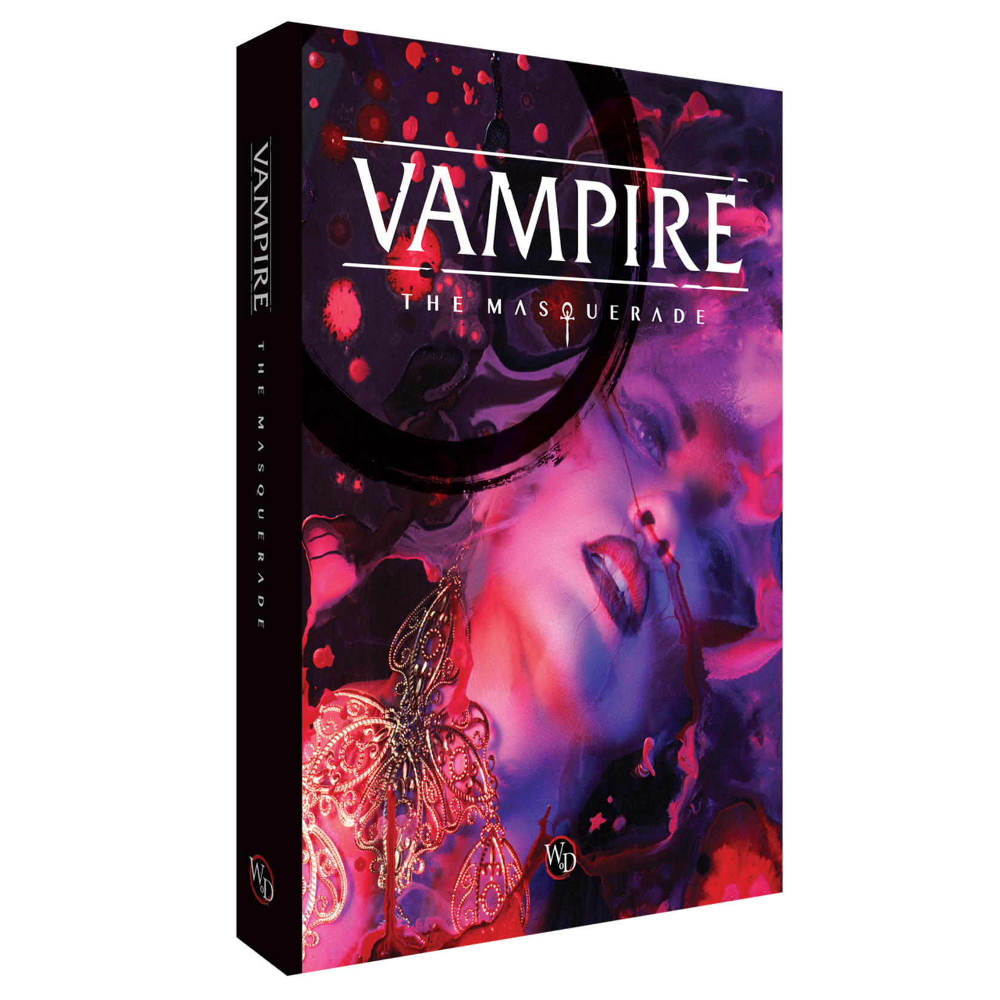
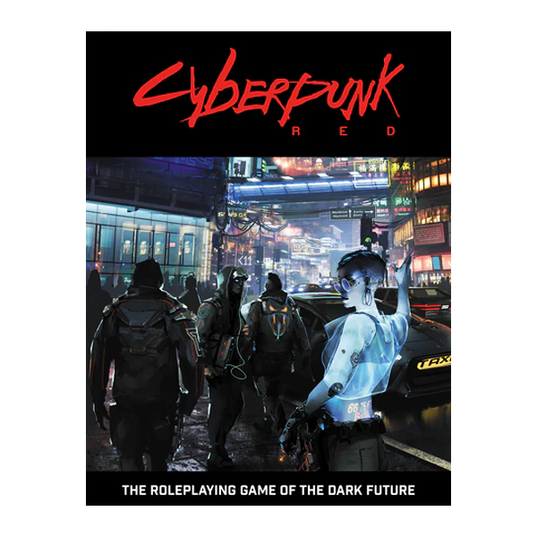

O uso do lúdico como ferramenta de ensino

Uma educação de qualidade não se limita apenas a conteúdos dados em aula.
Através do projeto de extensão LUDICO, da Universidade Tecnológica Federal do Paraná, campus Cornélio Procópio, é possível observar como os jogos de tabuleiro, RPGs e Escape Rooms podem desenvolver capacidades de aprendizagem nos participantes, melhorando também sua aptidão em raciocínio lógico, análise crítica de ações e de pontos de vista, organização e em relações interpessoais.
Através do projeto de extensão LUDICO, da Universidade Tecnológica Federal do Paraná, campus Cornélio Procópio, é possível observar como os jogos de tabuleiro, RPGs e Escape Rooms podem desenvolver capacidades de aprendizagem nos participantes, melhorando também sua aptidão em raciocínio lógico, análise crítica de ações e de pontos de vista, organização e em relações interpessoais.

 


